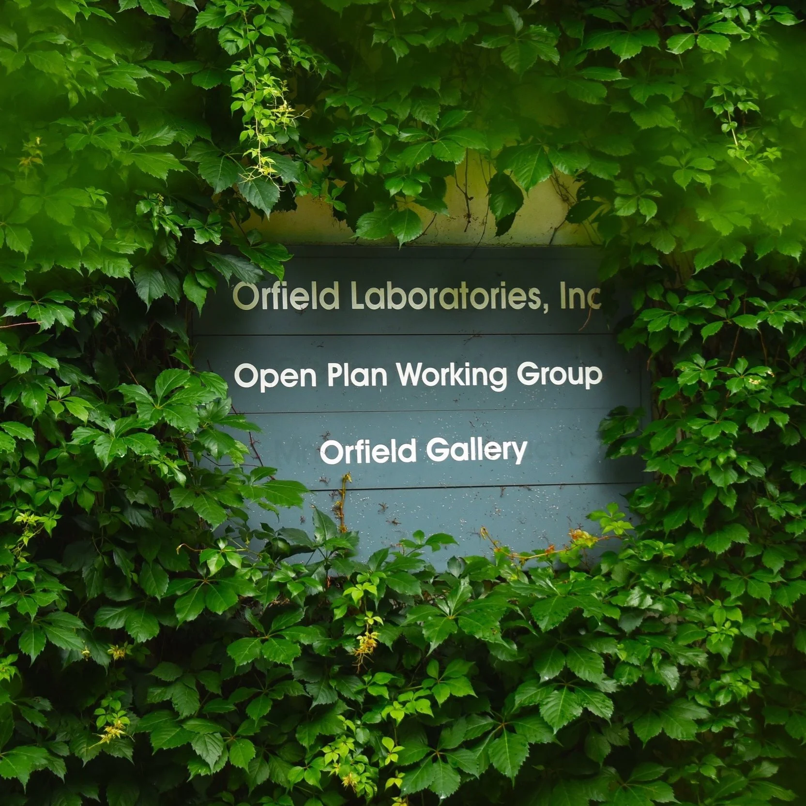
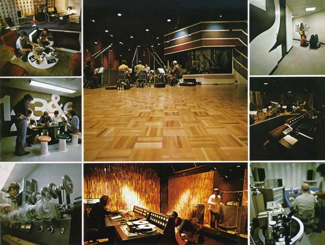
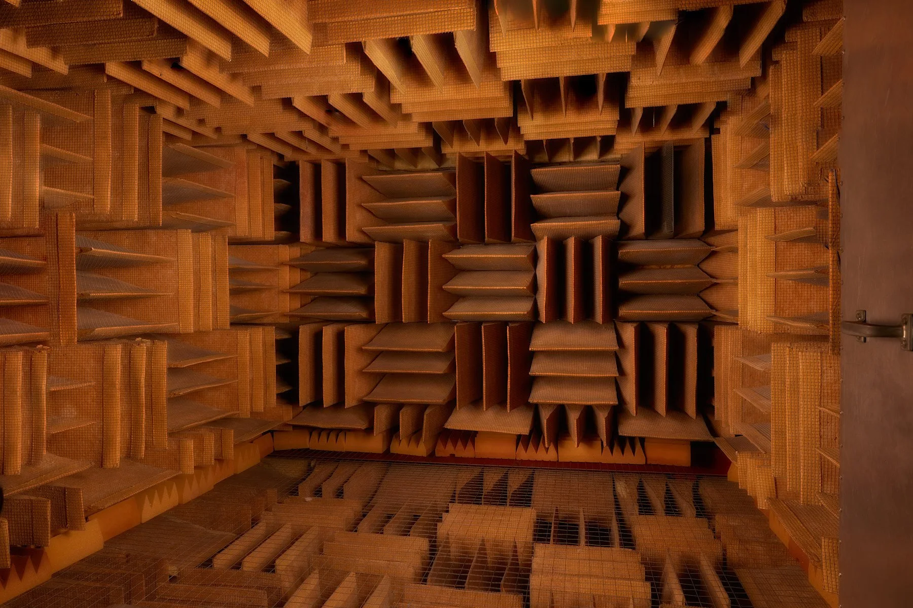
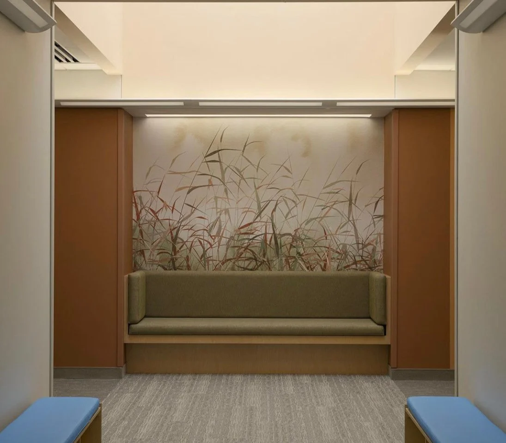
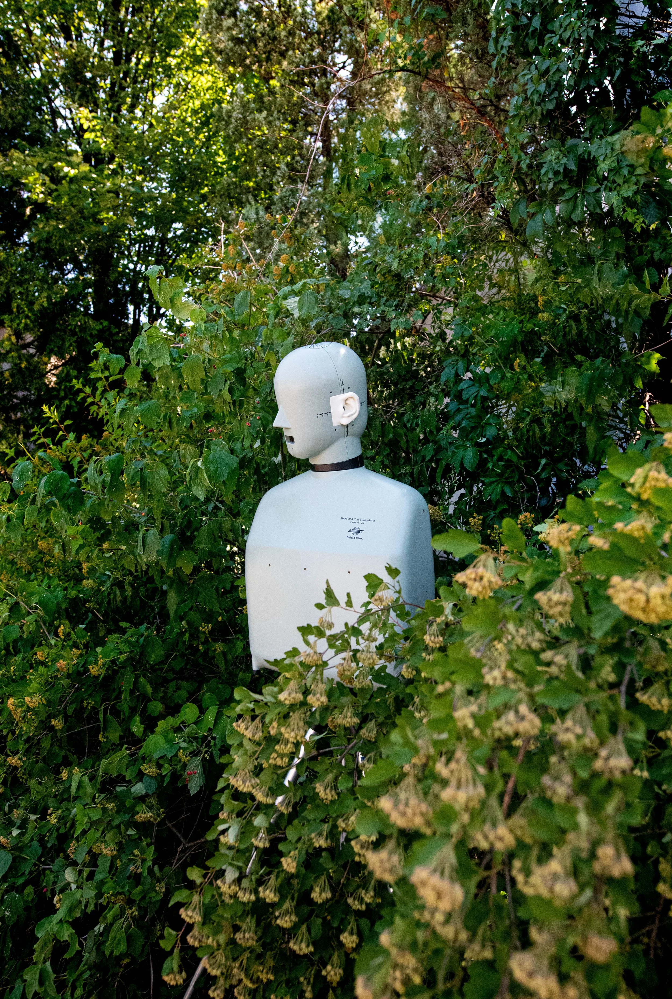

From a basement practice to the quietest place on earth. From the first digital recording studio to a world-class research laboratory. Five decades of hearing what others miss.
In 1966, a young philosophy student at the University of Minnesota began studying the philosophy of science. He would never finish his degree, but the discipline shaped everything that followed.
Steven Orfield left the university in 1969 and founded Orfield Laboratories in January 1971, operating from his basement with a radical premise: that human perception should drive design. He began buying precision measurement equipment to optimize acoustics and lighting in office systems, approaching architecture not as an aesthetic problem but as a sensory one.
"I learned that a question doesn't imply an answer," Orfield has said. "It implies a suspicious-looking question. It isn't solving problems that we need skill at. It's defining them, because once you define them correctly, solutions jump at you."
Within a decade, the practice had grown into the first independent multi-sensory building performance consulting laboratory in the United States. Product research was added in 1980. By 1990, Orfield was ready for a permanent home.

The building at 2709 East 25th Street in Minneapolis's Seward neighborhood was constructed in 1970 as Sound 80 Studios, founded by engineer Tom Jung and composer Herb Pilhofer.
What happened inside those walls over the next decade rewrote music history.
In December 1974, Bob Dylan walked into Sound 80 and re-recorded five of the ten tracks for what many consider his greatest album. Over two sessions on December 27 and 30, Dylan worked with local musicians including mandolin player Peter Ostroushko, bassist Billy Peterson, and drummer Bill Berg. The songs: "Idiot Wind," "Tangled Up in Blue," "You're a Big Girl Now," "Lily, Rosemary, and the Jack of Hearts," and "If You See Her, Say Hello."
In late 1976, a teenage Prince Rogers Nelson began recording demos across the hall from Cat Stevens, who was working on the album Izitso. Prince sang every part and played every instrument himself. Those demos led directly to his Warner Bros. contract, signed June 25, 1977. His debut album For You also began recording at Sound 80 that September.
Recorded in Studio 2 by Steven Greenberg and David Rivkin with vocalist Cynthia Johnson. Four weeks at No. 1 on the Billboard Hot 100. Chart-topping in 28 countries. The first Hot 100 number-one single from Minnesota.
In 1978, 3M chose Sound 80 to test the world's first commercial digital multi-track recording system. The Saint Paul Chamber Orchestra, conducted by Dennis Russell Davies, recorded Aaron Copland's "Appalachian Spring." It became the first digital audio recording to win a Grammy Award. Guinness recognized Sound 80 as the world's first digital recording studio in 2005.
Sound 80 had been a client of Orfield Labs since 1975 for acoustics and lighting design. In 1990, Steven Orfield purchased the building. In 2020, it was added to the National Register of Historic Places.

Sound 80 Studios, circa 1973A six-sided steel double-walled box, suspended on vibration-absorbing springs inside a five-sided steel outer chamber. Those two rooms sit inside a laboratory with 12-inch concrete walls. The interior is lined with steel plates, heavy insulation, and glass-fibre wedges that absorb 99.99% of sound.
The chamber was originally built by Sunbeam for product testing in Chicago. When Sunbeam closed their facilities in the 1980s, Orfield purchased it and kept it in storage. In 1994, he completed a building addition and installed it at 2709 East 25th Street.
Inside, visitors stand on a suspended mesh platform above wedge-covered floors. With the lights off, there is nothing. No hum, no buzz, no ambient drone. People report hearing their own heartbeat, blood moving through their veins, the sound of their eyelids blinking. After thirty minutes, many need to sit down as their sense of balance deteriorates without ambient sound reference.

Inside the anechoic chamberFive decades of sound quality research, product testing, and architectural consulting for some of the most recognized companies in the world.
Helped maintain the trademark motorcycle sound while reducing rider fatigue. Preserving the rumble, refining the experience.
Sound quality testing revealed customers hated the "crunching transitional noise between cycles." After Whirlpool made those transitions silent, competitors followed.
Long-standing testing partner. 3M developed early digital recording technology and chose Sound 80 as their testing ground.
Acoustic testing and optimization for office furniture systems. Defining how workspace design affects human performance.
Aviation acoustics testing. Understanding how cabin sound affects pilot comfort and passenger experience.
Sound quality analysis for powersports vehicles. Balancing performance acoustics with rider comfort.
Also: Steelcase, Haworth, JI Case, Jabra, Saint-Gobain, Burger King, McDonald's, and annual Sound Quality training seminars for Fortune 500 engineering and marketing teams.
In 2006, Orfield began a ten-year, self-financed research program into perceptual and cognitive disabilities. The investment: approximately $2 million, made during the Great Recession.
Starting with aging, dementia, and autism, the research expanded to include mental illness, ADHD, PTSD, sensory processing disorder, blindness, and deafness. The result was the world's first multi-sensory design standards in architecture and design for autism, dementia, and mental illness.
The work focuses on hypersensitivity common in people with invisible disabilities, designing spaces and products that reduce multi-sensory stimulus and visual complexity. In collaboration with Dr. Stephen M. Edelson of the Autism Research Institute, Orfield developed design guidelines that have been applied to healthcare facilities, senior housing, and educational environments.
One example: 16-person cottages for dementia patients in Cedar Falls, Iowa, designed with soft interior lighting, warm color schemes, wide hallways, and bedrooms near kitchens so residents can smell cooking.

From the New York Times to Smithsonian Magazine, the lab has drawn attention from around the world.
A Parsons School of Design graduate with a background in psychology, Emma Orfield Johnston is the only family member to ever work alongside her grandfather. She started interning at the lab at age fifteen.
After returning to Minneapolis full-time in 2021, Emma has expanded the lab's reach into therapeutic and wellness experiences, developing silent retreat sessions in the anechoic chamber and leading group tours that connect visitors with the profound sensory experience of absolute quiet.
The lab currently operates with a team of five, maintaining the same human-scale, research-first approach that Steven Orfield established over fifty years ago.
